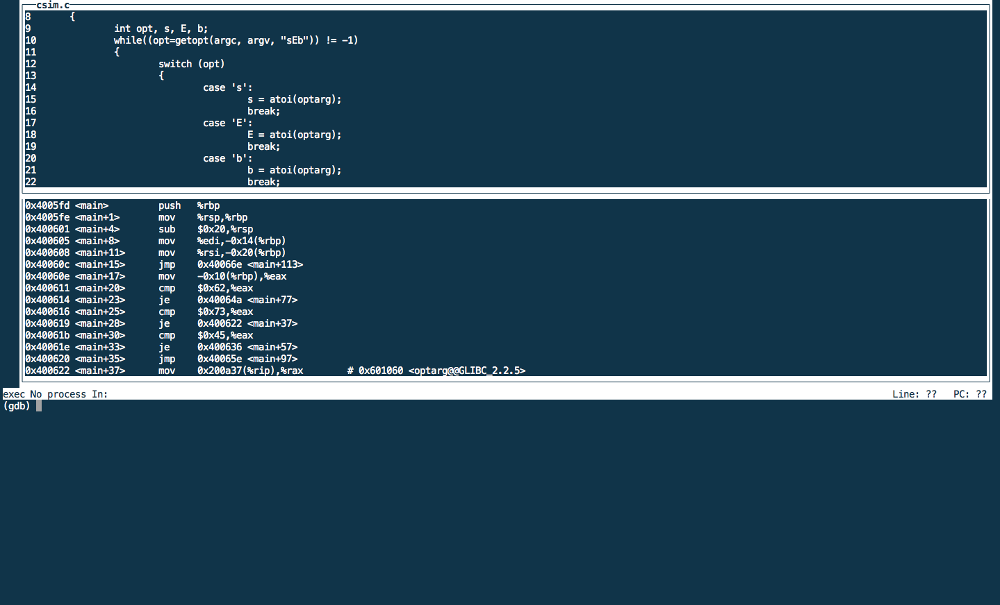

gdb（GNU Debugger）作为一个调试工具，其功能强大。它可以调试断点、查看反汇编代码、指令级单步执行、查看寄存器、检查内存/栈，是程序员的得力助手。
调试信息
要调试C/C++的程序，首先在编译时，我们必须要把调试信息(debugging symbols, 调试符号表)加到可执行文件中。使用编译器（cc/gcc/g++）的 -g 参数(Generate source-level debug information)可以做到这一点。
g++ -g HelloWorld.cpp -o HelloWorld
常用命令
远程调试
有时候需要调试的程序并不在本机上，gdb是支持远程调试的，具体命令如下：
(gdb) target remote IP:PORT
这时gdb可以远程连接到被调试机器上，对程序进行调试。前提是在远端的机器上，必须要启动好gdb服务端程序。
TUI
gdb tui（TextUser Interface）为dgb调试的文本用户界面，可以方便地显示源代码、汇编和寄存器文本窗口，tui使用效果如下图所示。

gdb tui可以直接运行gdbtui或者在gdb中用ctrl-c, ctrl-a打开。
上图中是打开了汇编窗口的，可通过命令layout split显示源代码和汇编窗口。其他常见的窗口显示命令为：
layout src/asm/regs：显示源代码/汇编/寄存器窗口layout split：显示源代码和汇编窗口focus cmd/src/asm/regs: 聚焦命令/源代码/汇编/寄存器窗口
命令行参数
很多程序在运行时都需要参数。例如下面C程序：
#include <stdio.h>
int main(int argc,char *argv[])
{
int i = argc;
printf("argc=%d\n",i);
for(i = 0;i < argc;i++)
printf("argv[%d]=%s\n",i,argv[i]);
return 1;
}
./demo_get_opt a b c
argc = 4
argv[0] = ./demo_get_opt
argv[1] = a
argv[2] = b
argv[3] = c
运行gbb时一共有三种方法可以指定参数。
第一种是在用set args指定参数
set args 可指定运行时参数。（如：set args a b c或者set args -f 20 -t 40）show args 命令可以查看设置好的运行参数。
(gdb) set args a b c
(gdb) r
Starting program: /home/vagrant/demo_get_opt a b c
argc = 4
argv[0] = /home/vagrant/demo_get_opt
argv[1] = a
argv[2] = b
argv[3] = c
第二种是在运行时设定参数
(gdb) r a b c
argc = 4
argv[0] = /home/vagrant/demo_get_opt
argv[1] = a
argv[2] = b
argv[3] = c
第三种是在gdb启动时加上--args参数
gdb --args ./demo_get_opt a b c
查看struct及指针
假设有结构体队列queue的指针数组q，指针qi指向q。
/* define a queue */
typedef struct {
int size;
int full_size;
node *head;
node *tail;
} queue;
queue *q, *qi;
q = (queue *) malloc(sizeof(queue) * S);
qi = q;
可以通过p *q的 方式获得指针所指向结构体的值:
(gdb) p *q
$1 = {size = 0, full_size = 2, head = 0x0, tail = 0x0}